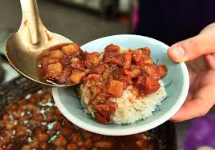

滷肉飯
火雞肉飯
豬腳飯
控肉飯

南豐魯肉飯也是小有名氣，在自強夜市內，自強三路與苓雅二路轉角處，
攤子就擺在外頭，小小一個攤位，上頭擺滿了許多看起來十分可口的滷味跟小菜，十分誘人，
原以為就是個路邊髒亂的小攤販，
沒想用餐處似乎剛整修完沒多久，
空間明亮，還提供冷氣餐點就一般的飯/湯類，再加上各式小菜，
價位算中等偏小貴一些些，聽說是調漲過的
價錢，之前還稍微便宜些。
雖然覺得有點小油了些，但口味真的蠻不錯，真的是掛保證的在地小吃。
有機會到高雄，
不妨來自強夜市嚐嚐這在地美味，
除了南豐魯肉飯，週邊也還有不少美食值得去探索哩。怎不能點南豐魯肉飯
的招牌-滷肉飯呢，
醬汁均勻遍佈的飯上，舖了酸菜跟油亮亮的爌肉，
爌肉看似肥，其實肥瘦比例相間，肥而不膩，
滷的十分透徹而且入口即化，
吃完真的十分有滿足感哩。